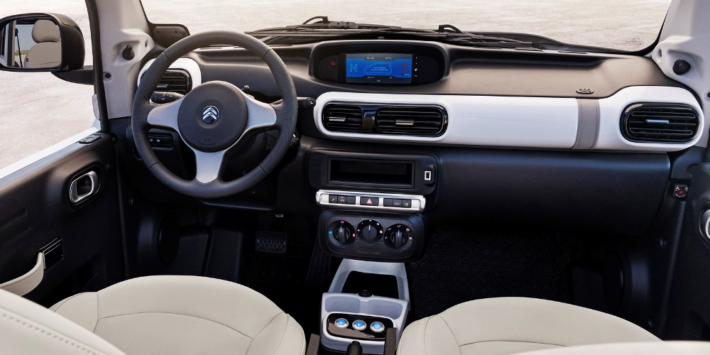
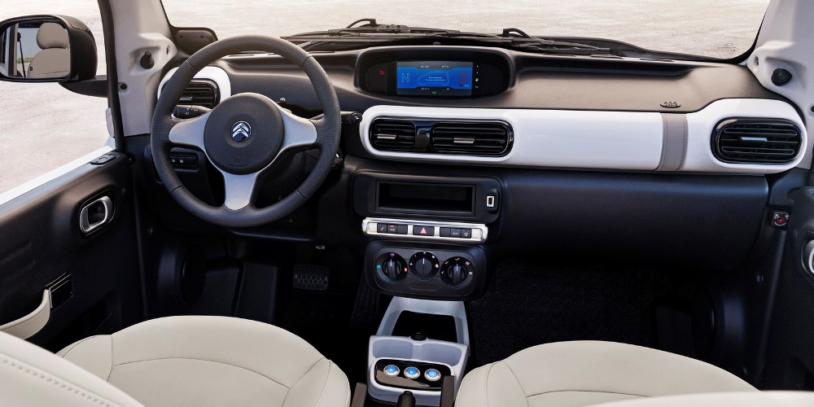
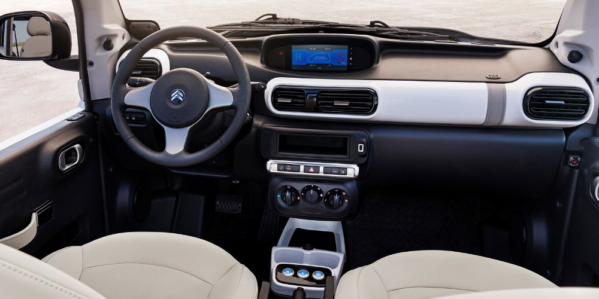

Četvrta generacija Renoovog MPV modela C segmenta, Scenic, pokazala nam je da francuzi nisu zaboravili kako se konstruiše automobil unikatnog izgleda, kvalitetne kabine i dobrih voznih osobina
Za početak odabrali smo Grand Scenic sa najjačim dizel motorom, četvorocilindrašem zapremine 1.6 litara sa 160 KS koji snagu na prednje točkove prenosi pomoću šestostepenog robotizovanog menjača sa dva kvačila.
Kabina Grand Scenica je vrlo prostrana, a zahvaljujući velikim staklima, svetla je i prijatna. Ako je automobil opremljen staklenim krovom, kao verzija koju smo testirali, atmosfera je još prijatnija i opuštenija, naročito ako je vreme tmurno. Utisak luksuza u velikoj meri donose prave fotelje sa profilisanim naslonima za glavu. U ovom automobilu sedite vrlo udobno i ne previše visoko, tako da je telo vozača i putnika opušteno što omogućava da duga putovanja prođu bez prevelikog zamora.
Grand Scenic je sa lakoćom ulazio u tesne i oštre krivine, a vozaču su dodatnu sigurnost ulivale odlične kočnice koje „grizu“ i vrlo su otporne na pregrevanje. Ovde moramo da pohvalimo i „EDC“ menjač koji se odlično snašao u ovakvim uslovima. Uvek je birao adekvatan stepen prenosa, a na nizbrdicama je „znao“ da treba kočiti motorom pa nismo imali previše potrebe da intervenišemo.
Standardni model ima horizontalno postavljene svetlosne grupe, dok u Grand verziji one liče na bumerang. Inače, iznenadilo nas je što Renault nije i na ovim modelima iskoristio karakteristične dizajnerske elemente sa lučnim dnevnim svetlima koje su se odlično uklopile u dizajn modela Megane i Talisman.
Klasičan Scenic ima u ponudi četiri nivoa opreme, a Grand Scenic tri. Trenutno je u ponudi i specijalni paket opreme "Edition one" koji se po opremljenosti nalazi između pretposlednjeg i poslednjeg nivoa. Renault Srbija je već od starta prodaje obezbedila popust od 500 evra, pa najjeftiniji Scenic može da se nabavi za 15.990 evra, a Grand Scenic za 18.990 evra. Inače Renault nudi i beskamatni kredit do pet godina, koliko iznosi i garancija na vozilo.
TESTIRALI SMO: Citroën C4 Cactus 1.6 BlueHDI
Citroën C4 Cactus pruža osobeni šarm za volanom: u vožnji se pretvara u pravi Citroën u punom smislu te reči. Citroënov krosover je ujedno najudobniji automobil u klasi, dakle, udobniji je od Peugeota 2008 ili Opela Mokke

Ovaj Citroën je veoma dobro i kvalitetno napravljen automobil. Finalna obrada bi postidela i nemačku konkurenciju. Zavirite u neki C4 Cactus sa bogatijim paketom opreme i biće vam jasno na šta sam mislio.
Ergonomija je odlična osetno bolja nego Citroena C4, ili, recimo, Peugeota 2008. Prostraniji je i od Renaulta Captur. Digitalni instrumenti veoma su pregledni i sve je logično raspoređeno, u toj meri da se na ovaj automobil može naviknuti čak i vozač nemačkih automobila. Nedostaje obrtomer — meni je to jako smetalo.
Citroënovi inženjeri su odustali od eksperimentisanja kako ne bi zamarali vozače koji nisu notorni zaljubljenici u Citroënova avangardna rešenja. Prednja sedišta su veoma dobra i široka i ne zamaraju na dužim putovanjima, a zvučna izolacija je za dve klase bolja nego kod konkurencije.
Na zadnjem sedištu je gotovo raskošno, ima više nego dovoljno mesta za glave i kolena putnika, ali Citroënovi inženjeri su mislili i na gepek, pa su vam podarili prtljažnik od čak 400 litara (po merenjima). Ako vam treba veći automobil, moraćete da kupite C4 Picasso, ili, još bolje, C5, jer raskoš na zadnjim sedištima mora i da se plati (osim ako kupite C-Elysse – on za malo novca nudi mnogo mesta).
U osnovnoj opremi C4 Cactus ima sve što vam je potrebno, čak i odličan, ali zaista odličan zvuk iz audio uređaja (nisu škrtarili sa osrednjim zvučnicima ovoga puta). Obruč upravljača savršeno leži u rukama, prosto ne želite da ga ispustite koliko je dobro profilisan. Prednji vazdušni jastuk za suvozača nalazi se u konstrukciji krova kako bi suvozač imao više mesta u kabini. Još jedno originalno rešenje.
TESTIRALI SMO: YAMAHA XSR 900
U ovom testu isprobali smo Yamahu XSR 900. Izgleda kao XJR 1300, juri kao MT-09. Čak i bolje.
Iako iznad struka podsjeća na XJR 1300, najnoviji pripadnik Yamahine „Faster Sons“ obitelji je od kukova naniže klon sportskog nakeda MT-09. A to je svakako dobra referenca. I pritom od modela MT-09 nije samo naslijedio sportsku ciklistiku i odličan trocilindrični agregat s iznenađujuće eksplozivnih 115 KS, nego je oplemenjen i kliznom spojkom, kontrolom proklizavanja, dorađenim mapama, čvršćim ovjesom, mekšim sjedalom, drugačijom ergonomijom...
Ukratko, ispod klasične forme skriva se moderan sportski naked odličnih voznih osobina. U konačnici možda i nije tako oštar kao bratski crossover Tracer, ali se vozi čak i malo bolje od MT-09 kakvog poznajemo. Isto tako, od svih modela retro stiha koje smo dosad imali zadovoljstvo testirati XSR 900 je najbrži i najuzbudljiviji. Više o tome po čemu je ovaj motocikl bolji od drugih modernih klasičara pročitajte u aktualnom 151. broju Moto Pulsa.

 
